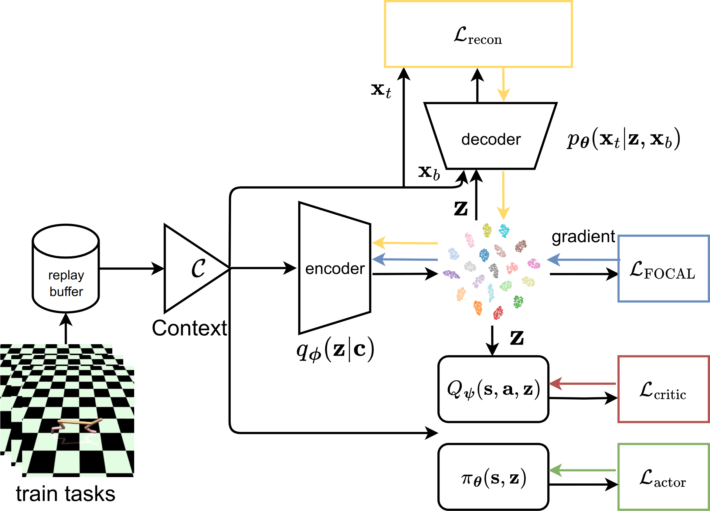

UNICORN
Theoretic Framework
The probabilistic model of COMRL consists of the following random variables and (conditional) disribution terms
| Random Variable |
Description |
CPD |
| M |
Task (Instance of MDP) |
p(M) |
| Xb=(s, a) |
Behavior-Related Context |
p(Xb) |
| Xt=(r, s′) |
Task-Related Context |
p(Xt∣Xb, M) |
| Z |
Task Representation |
p(Z∣Xb, Xt) |
The task representation learning in COMRL aims to find a minimal sufficient statistics Z of task M based on context X
|
p(z∣x)maxI(Z; M)s.t.I(Z; M; Xb)≥0
|

|
Direct optimization is intractable in practice, with the assumption of I(Z; M;Xb)≥0, I(Z; M) is lower bounded as
I(Z; M)=I(Z; M∣Xb)+≥0I(Z; M; Xb)≥I(Z; M∣Xb)=I(Z, Xt; M∣Xb)−I(Xt; M∣Z, Xb)=I(Xt; M∣Xb)+=0I(Z; M∣Xt, Xb)−I(Xt; M∣Z, Xb)⇐(Z⊥M∣Xt, Xb)=I(Xt; M∣Xb)−H(Xt∣Z, Xb)+≥0H(Xt∣Z, Xb, M)≥I(Xt; M∣Xb)−H(Xt∣Z, Xb)=I(Xt; M∣Xb)−H(Xt)+I(Z, Xb; Xt)=constI(Xt; M∣Xb)−constH(Xt)+constI(Xt; Xb)+I(Z; Xt∣Xb)
Besides, I(Z; M) is also upper bounded by I(Z; X) due to the Markov chain M→X→Z in the dependency graph
I(Z; M)−I(Z; X)=EM, x, z[logp(z∣x)p(z∣M)]≤logM∑x∑z∑p(M)p(x∣M)p(z∣x)p(z∣x)p(z∣M)=0
Consider the aforementioned two bounds of I(Z; M), some pre-existing COMRL algorithms can be interpreted as
| Algorithm |
Essential Optimization Objective |
Description |
| FOCAL |
maxI(Z; X) |
Upper Bound |
| CORRO |
maxI(Z; Xt∣Xb) |
Lower Bound |
| CSRO |
maxλI(Z; Xt∣Xb)+(1−λ)I(Z; X) |
Hybrid |
FOCAL
FOCAL tries to maximize the upper bound I(Z; X), which is equivalent to the negative distance metric loss
I(Z; X)=Ex, z[logp(z)p(x)p(z, x)]=Ex, z[logh(x, z)p(z)p(z∣x)/∣M∣=1Ex′[p(z)p(z∣x′)]]+constlog∣M∣≈M∈M∑x∈D(M)∑log∑M′∈M∑x′∈D(M′)h(x′, z)h(x, z)⇐z∼fϕ(⋅∣x)
However, such objective may lead to spurious correlation under distribution shift of Xb (Z is solely conditioned on Xb)
CORRO
To alleviate the degeneration caused by distribution shift, CORRO proposes to maximize the lower bound I(Z; Xt∣Xb)
I(Z; Xt∣Xb)=Ex, z[logh(xb, xt, z)p(z∣xb)p(z∣xt, xb)/∣M∣=1EM∗∼p(M)Ext∗∼p(xt∣M∗, xb)[p(z∣xb)p(z∣xt∗, xb)]]+constlog∣M∣≈M∈M∑x∈D(M)∑log∑M∗∼Dh(xb, xt∗, z)h(xb, xt, z)⇐z∼fϕ(⋅∣xb, xt)xt∗∼gψ(⋅∣xb, M∗)
CSRO
CSRO maximizes I(Z; X) and minimizes the CLUB of I(Z; Xb) to alleviate the distribution shift problem of context
≥ I(Z; X)−λICLUB(Z; Xb)=I(Z; X)−λ[E(z, xb)∼p(z, xb)logp(z∣xb)−Ez∼p(z)Exb∼p(xb)logp(z∣xb)]I(Z; X)−λI(Z; Xb)=I(Z; Xt, Xb)−λ[I(Z; Xt, Xb)−I(Z; Xt∣Xb)]=λI(Z; Xt∣Xb)+(1−λ)I(Z; X)
General Implementation
With the derived theoretic framework, UNICORN formulates the optimization objective based on information bottleneck
p(z∣x)minI(Z; X)s.t.I(Z; M)≥Ic⟹p(z∣x)minLIB=I(Z; X)−βI(Z; M)
The first term I(Z; X) is implement as the FOCAL objective and the second term is approximated as
I(Z; M)≈αI(Z; X)+(1−α)I(Z; Xt∣Xb)α∈[0, 1]
which is a convex combinition of FOCAL and CORRO like CSRO. Substitute the approximation into LIB and scale it as
LIB=I(Z; X)−αβI(Z; X)−(1−α)βI(Z; Xt∣Xb)⇒−[I(Z; Xt∣Xb)+(1−α)βαβ−1I(Z; X)]
Instead of using CORRO or CLUB in CSRO to approximate I(Z; Xt∣Xb), UNICORN proposes to rewrite it as
I(Z; Xt∣Xb)=I(Z, Xb; Xt)−constI(Xt; Xb)≈−LreconE(xt, xb)∼p(xt, xb)Ez∼qϕ(z∣xt, xb)logpθ(xt∣z, xb)+const
where pθ(xt∣z, xb) is introduced as an unbiased estimator for p(xt∣z, xb) and also able to serve as the world model
